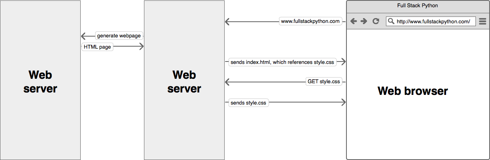

A Web Server Gateway Interface (WSGI) server implements the web server side of the WSGI interface for running Python web applications. The WSGI standard v1.0 is specified in PEP 0333. As of September 2010, WSGI v1.0 is superseded by PEP 3333, which defines the v1.0.1 WSGI standard.
Requests from the browser that are not for static assets (this is specified in the web server's configuration which requests are for static assets and which are not) are passed to the WSGI server. Once the request is processed and generated by the WSGI server, the response is passed back through the web server and onto the browser.
PEP 0333 WSGI v1.0 and PEP 3333 WSGI v1.0.1 specifications.
Green Unicorn, mod_wsgi, uWSGI, and gevent are common WSGI server implementations.
This Basics of WSGI post contains a simple example of how a WSGI-compatible application works.
Complete single server Django stack tutorial is thorough and informative for non-paas hosting choices.